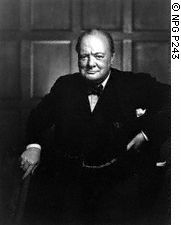

Forums galactiques > Assemblée Galactique : diplomatie officielle > Une nouvelle ...E...espérance : L'O.M.U.
Pages : 1
| Dr.Machiavel Respect diplomatique : 651  19/09 ETU 21:37 | Score : 18 Détails Depuis quelque temps déjà, le Dr.Machiavel avait regagné une loge a l'Assemblée galactique permanante reservé aux Gouverneur de la CUI... Depuis son exile aprés la Mort d'Utopia et ses combat pour perpétué la foie en la Sainte Trinité, son aciduité aux débats galactique avaient fortement chutté...
Mais aujourd"hui il revenait fierement sur le devant de la Scéne, avec une grande nouvelle, espérance pour Espérance a présenter a l'Assemblée, ses yeux avait regagné les lueurs de Combatant de la Verve qu'ils détenaient lorsqu'il défendait Utopia contre les Diplomates, la Triade ou autre LGX, Syndicat, Ex Machina et indépendants... Il demanda la parol, l'ère impatient...: « Assemblée Galactique, Membre de la Fédération, de la Guilde, mes confrères de l’Alliance, Peuple d’Espérance, Je me présente devant vous pour fédéré la galaxie derrière le projet que j’ai mûrement réfléchie…. Ma démarche découle du fait que j’ai, il y a peu de temps, récupéré la souveraineté de mon système natale, le système 49, lieu de naissance du Peuple Terroriste… Par un référendum ils ont choisis de rejoindre la Confédération Utopial Indépendante que je préside… Cela vous est égale ? Mais ce peuple qui est le miens est profondément traumatisé, ravagé par les guerres qu’il a eu a subir qu’elles soit de ma volonté ou non… Ils m’ont expliqués leur dépression face au manque de stabilité au nouveau Etatique du au changement de souveraineté successive… du à l’interdiction des pratiques communes de notre civilisation… Et les condamnations de la mémoire qu’ils ont vécus du à leur dirigeant souhaitant éviter émeutes et révolte…Cela en évacuant l’identité populaire, les rites de notre civilisation… C’est se système perdu que je souhaite reconstruire et protéger durablement, le faire grandir dans la paix, loin des conflits armées et des détonations de bombes hyper Atomique… Je veux aussi a travers lui aidé par mon projet toutes les planètes, civilisations et peuples en manque d’identité, trop souvent servant de chair à canon… Voici l’outil de mon Combat, il se nomme l’O.M.U… L’Organisation des Mondes Unies a pour but le maintien de la paix par la régulation des conflits au niveau galactique… L’OMU se doit d’être une forme de « gouvernement Apolitique » n’ayant aucune aspiration politique ou idéologie gouvernante de développement autre que la paix universel… Mes détracteurs anciens diront que l’OTPU a tenté de jouer se rôle et qu’il a échoué…Mais l’Organisation du Traité pour la Paix Universel ne s’était pas donné les bons moyens pour parvenir a ses fins… Il fut assassiné dans l’œuf par la Nouvelle Espagne et la 1ere Guerre Tyrannique contre Cronos et ses acolytes… Aujourd’hui, me direz vous, quelles sont les conditions réunies par rapport au passé pouvant faire croire une réussite de l’O.M.U ? Déjà car se projet est fondé sur les aspirations de nombre d’entre vous, par exemple elle fait intervenir les coalitions réunis en conseil…Ensuite se projet a été sérieusement étudié par l’Assemblée Constituante mais non adopté car je n’ai eu le temps de le mettre en forme définitive… En Espérance, les moyens logistiques sont réunis pour maintenir la paix si nous nous entraidons… Le climat politico diplomatique semble adéquat…Enfin je pense humblement la galaxie mur pour adopter mon projet… Seulement vous devez déjà vous dire : « Qui est ce vieux détritus d’Espérance qui vient nous faire chier avec un pseudo gouvernement alors qu’il y a peu, on vient d’en mettre un en place ? » Je n’apporte pas des idées séparatistes ou indépendantistes tel Uotpia ou pour l’autre les Ex Machina… Non je n’apporte même pas un gouvernement, mais une organisation indépendante chargé de régler les conflits par la parole et la pression du nombre, et si nécessaire par la force… Jamais je ne viendrais contrecarrer la lourde tache de Cesco Imperator, commandant que je respect énormément… Au contrair… J’apporte un maintien des libertés, des droits, du GOUVERNEMENT, et de la paix…Tout ceci en raison de la Loi Naturel… Et d’un Terme cher a Espérance : l’Union… Aussi passons aux faits, voila le systéme que je propose, l’OMU se compose de trois instance : - Le Secrétariat Général - Le Conseil de Sécurité -La Cour des Mondes I Le secrétariat général - Il se compose d’un seul et unique membre élu pour deux semaines représentant le système administratif de l’OMU - Il recueille les plaintes et les soumet a l’une des deux instances - Il pose les votes dans les deux instances - Il valide le résultat final des votes - Il est chargé des négociation primaire lors des conflits le temps du vote - Il ressentie et valide les Mondes Membres II Le Conseil de Sécurité - Il se compose d’un représentant de chaque coalition, gouvernement ou autre instance reconnu d’Importance galactique - Il est chargé de voter l’intervention de l’OMU pour les conflits entre block de commandants - Il doit confier l’intervention de l’OMU aux personnes aptes ainsi que trouvé les financements nécessaires - Il gère stratégiquement les interventions - Il négocie avec le Secrétaire Général une ultime foie le temps de l’arrivé des flottes de l’OMU - Il décide de sanction a adopté envers un Monde fautif ou un indépendant récidiviste, ils les propose au vote de la cour des peuples III La Cour des peuples - Elle se compose de tous les membres de l’OMU, individuelle ou membre de coalition, gouvernement et autre non représentant au conseil de Sécurité - Elit le Secrétaire Général - Vote l’Intervention de l’OMU pour les conflits entre deux commandants - Adopte par vote les sanctions proposé par le conseil de sécurité - Peut apposé son Veto sur une décision du Conseil de Sécurité si un monde recueille 20 signatures, et soumet au vote la décision. Tous les membres sont égaux, ainsi que chaque représentant des civilisations… Par un souci d’Objectivité, le Secrétaire général ne vote dans aucune instance… L’OMU se réunira sur un forum externe pour éviter de fermé les coalitions… Tous les membres ayant conscience d’un conflit entre membre de l’OMU ou externe avec un membre doivent poser plainte auprès du Secrétaire Général qui propose un vote à l’instance adéquat… Le financement se fait sous forme de dons non obligatoire… L’OMU trouvera sa force dans la bonne volonté de tous d’y adhéré, et surtout sur le soutient des coalitions et autres institution tel le gouvernement portant en se moment le visage de Cesco… Les votes seront de 24 à 48 heurs selon l’avancement du conflit pour une meilleur réactivité…A la majorité des votants… Les intervenants de l’OMU seront chargé de restituer les biens planétaires spoliés par l’Agresseur au (x) victimes… J’espère que vous ne me jugerez pas fou, ni séparatiste ou orgueilleux… je suis certes vieux, l’une des mémoires d’Espérance…C’est en partit pour cela que je me permet de vous proposer mon projet … Je vous demande seulement de prendre conscience que la paix a porté de main de ceux qui la tende, se qui demande un effort, certes, mais vivement récompensé par la suite… L’Union fait la Force, se thème redondant a pourtant été démontré lors des Guerres Tyrannique, et prôné par le Royaume… La paix passe par la parole, la diplomatie mais aussi par l’intransigeance de ceux qui la viole, ceux qui condamnent des vies, des peuples, des civilisations… Ils vous faudra bien plus de courage pour accepter d’adhérer à l’OMU que de cédé a la facilité de la guerre…Il est plus simple de condamné des vie en tirant a l’arme Hyper Atomique que de parlé, négocié, concédé et respecté… Pour l’O.M.U, Pour Espérance, Pour nos peuples martyres depuis trop longtemps !!! » | ||
| revan Respect diplomatique : 1671  20/09 ETU 14:01  | Score : 3 Détails Apres avoir ecouté avec attention votre discours, j'ai decidé d'entrer dans votre organisation
Non pas pour me racheter d'erreur que je n'ai pas commises ( pas mal celle là ^^ ) Mais tout simplement pour aider ceux qui l'ont besoin, comme j'ai toujours fait mais cette fois à plus grande echelle. / j'ai attendu un peu pour Upé ;) / | ||
| Denior Respect diplomatique : 3266  20/09 ETU 14:38 | Score : 5 Détails Docteur,
J'ai pris connaissance avec beaucoup d'intérêt de votre projet qui présente beaucoup de principes fort intéressant pour l'avenir de notre Galaxie. Néanmoins, je me dois de rappeler ou de préciser à l'ensemble des commandants que ce texte n'en est malheureusement pas à sa première lecture puisqu'il à fait l'objet d'un débat au sein du comité constitutionnel auquel appartenait le Docteur Machiavel. A l'issue de discussions poussées et exhaustives, ce texte a été soumis au vote des constitutionnalistes et n'a pas été retenu en raison de la compléxité de sa mise en oeuvre. Vous avez adopté, commandants d'Espérance, le nouveau texte constitutionnel qui vous engage dans un processus constitutionnel pacifiste, réaliste et pragmatique. Un soutien à une nouvelle structure, l'OMU, certes tout à fait philantropique, n'apportait que des entraves supplémentaires à la mise en place déjà difficile de ce traité constitutionnel. | ||
| Edgar Figaro Respect diplomatique : 251  20/09 ETU 14:50 | Score : 7 Détails Chers commandants,
Je suis au regret de vous dire que de toute façon tout le monde s'en fout complet de ces projets tous plus unilatéraux les uns que les autres, ils ont le mérite d'etre novateurs et intéréssants c vrai, mais tout le monde s'en fout. Il n'y a pas de débat, pas d'échange contradictoire d'idées, aucune construction positive qui donne envie aux commandants de se pencher dessus. Les vrais dirigeants d'Espérance considèrent que des élections démocratiques sont des "marchandage de tapis" alors pkoi voulez vous que nous nous interressions à vos projets? Vous voulez savoir pourquoi? Parceque les commandants n'ont que faire d'une constitution qui ne leur sert strictement à rien. Ils n'ont rien à faire de normes dictées par ceux qui s'échangent le pouvoir depuis X mois. | ||
| Denior Respect diplomatique : 3266 20/09 ETU 15:21 | Score : 5 Détails Cher commandant Figaro,
J'ai trop de fois constaté votre bon sens pour ne pas voir dans votre intervention que l'expression de l'égoïsme et du cynisme. J'y perçois surtout la regret de ne pouvoir voir aboutir un système harmonieux et respectueux de tous. Je ne partage pas votre résignation, sans doute par utopisme et par euphorisme congénital. Oui, je suis utopiste, pacifiste, mais c'est avec de tels principes que la conscience humaine s'est développée. Les Droits de l'Homme seaient ils si prégnants dans nos débats si des utopistes n'avaient pas un jour décidé de combattre la Loi de Nature ? Toute création humaine réelle ou métaphysique nait de l'utopie. L'Utopie ne condamne pas le réalisme, en tous les cas, pas pour la majorité de ceux qui se sont engagés dans la rédaction du processus constitutionnel. J'ai particulièrement conscience que nous vivions dans notre Galaxie dans un système proche de celui connu dans l'Antique planète Terre à une période dite de la Féodalité. Oui, nous sommes tous des feudataires accrochés à notre bribe d'Empire. Comme eux, nous menons nos petites guerres privées pour accroître notre lopin de terres sans conscience du bien général. Mais comme eux, au fin fond de nouveaux monastères, je conçois de nouvelles trêves de Dieu. Comme eux, un système central est en train de naître pour aboutir à un semblant d'organisation.... Notre Utopie, c'est celle de cesser d'êtyre des Barbares pour entrer ensemble dans une nouvelle Renaissance, celle d'Espérance | ||
| Arthérius Respect diplomatique : 1559  20/09 ETU 18:32 | Score : 4 Détails Je cite Dénior : " Comme eux, un système central est en train de naître pour aboutir à un semblant d'organisation....
Notre Utopie, c'est celle de cesser d'êtyre des Barbares pour entrer ensemble dans une nouvelle Renaissance, celle d'Espérance" J'vous en ficherai , moi , de cesser d'être barbare ! ^^ Sans aucun regret, j'annonce que cette idée est l'une des plus intelligentes que cette Assemblée ait pu connaitre ... AIE AIE !!! Oui , bon , la création de la FSBL etait pas mal aussi , Aerynn veuillez lacher mes oreilles SVP ... Néanmoins, comme l'a plus ou moins fait remarquer un commandant (avec douceur et tact -_-' mais ca , passons) , peu de personne seront à même de s'interresser au projet ... Enfin , si , vous avez gagné Revan... Ben ouais, désolé , j'ai rien pu faire ... BOn courage à vous en tout cas et si de nouveaux éléments se présentent , n'hésitez pas a m'en faire part !! | ||
| -[Aerÿnn]- Respect diplomatique : 2661  21/09 ETU 10:38 | Score : 1 Détails "Cher Docteur Machiavel,
Tout d'abord, j'alloue votre projet. Pour l'Union d'Espérance, pour Espérance tout court. Permettez-moi maintenant de revoir certains points. Celui-ci, votre définition : [ Organisation des Mondes Unies ] Organisation indépendante chargée de régler les conflits par la parole et la pression du nombre et si nécessaire par la force. Elle apporte un maintien des libertés, des droits, du GOUVERNEMENT et de la paix… A ma première impression, peut-être érronée, L'OMU serait en quelque sorte une méga-coalition ? Où chaque représentant de chaque coalition aurait une voix. Où les conflits seront règles ensemble ? Concernant les postes à pourvoir : [ Le secrétariat général ] Un seul membre recuillant les 'plaintes' ? Reviendrions-nous au système des Diplomates ? Non seulement chargé des négociations de conflits, il serait celui qui 'valide'/accepte les membres qui feront partie de l'OMU ? Mais paradoxalement, élu par la cour des peuples..? [ Le Conseil de Sécurité ] Pour ma part, je le considère comme 'police'... Où chaque représentant de chaque coalition voterait l'intervention de l'OMU aux conflits ? Mais ce n'est pas déjà ce qui se passe ? Les chefs de coalition tentant de résoudre les conflits ? [ La Cour des peuples ] Vote l'intervention ou pas et a un droit de veto. Ok. Pensez-vous qu'Espérance est prête pour votre projet ? Qui ne sera pas accepté par tous les citoyens d'Espérance, comme à chaque système proposé... En tout cas, vous avez mon soutien. N'hésitez pas à approfondir si vous pensez que c'est nécéssaire, sur mes propos et questionnements... Arthérius... vite le rendez-vous... hein." | ||
| Wins Churchill Respect diplomatique : 12  21/09 ETU 12:58 | Score : 5 Détails Je m'adresse pour la première fois à cette assemblée après avoir largement mûri et mesuré mon intervention...
Jeune commandant dans la galaxie espérance, je me suis plongé depuis plusiseurs cycles dans les archives des différents discours. Nombres de projets de fédération, de gouvernement, de traités sont proposés, adoptés, votés et peut être appliqués mais ont-ils sincèrement une portée réelle pour la majorité de cette galaxie??? Ainsi je me rallie aux propos du commandant Edgar Figaro qui je le cite: "Vous voulez savoir pourquoi? Parceque les commandants n'ont que faire d'une constitution qui ne leur sert strictement à rien. Ils n'ont rien à faire de normes dictées par ceux qui s'échangent le pouvoir depuis X mois." Je suis en parfait accord avec son analyse même si je l'avoue elle peut sembler brutale et violente envers ceux qui ont signé ce nouvel accord. Sous le couvert d'une grande cause n'ont-ils pas plutôt tendance à vouloir verrouiller tous les commandants libéraux et ultra libéraux pour mieux servir leur cause?!!!! Ne sont-ils pas là dans une démarche dictatoriale!!!! Voilà mon analyse et mes pensées au risque moi aussi de vous choquer!!! Notre galaxie ne s'appelle-t-elle pas Espérance (espoir d'une vie libre sans règle strictes et dirigiste)?? Laissons la liberté aux libéraux!!!! | ||
| -[Aerÿnn]- Respect diplomatique : 2661 21/09 ETU 13:53 | Score : 2 Détails "Bonjour Commandant,
Tout d'abord bienvenue. Permettez-moi d'intervenir en vous donnant mon humble avis. Je cite vos derniers propos... : Sous le couvert d'une grande cause n'ont-ils pas plutôt tendance à vouloir verrouiller tous les commandants libéraux et ultra libéraux pour mieux servir leur cause?!!!! Ne sont-ils pas là dans une démarche dictatoriale!!!! Depuis je pense l'aube de cette galaxie qui s'apelle bien Espérance, de grandes et nobles causes sont nées. Pour la paix, pour le rêve d'une vie meilleure, pour l'union de tous etc... Vous pensez pour ce projet-ci et peut-être pour les anciens que ce sont des démarches à caractère dictatorial ? Mais Commandant, au risque de vous contredire, ce n'est pas de la dictature... Pesez vos mots et relisez les annonçes... En aucun cas ces projets obligent Espérance d'obéir. Au fur et à mesure, des textes et des systèmes ont été proposées et à chaque fois, si je ne me trompe pas, nous avons pû donner notre avis, nous avons pû choisir entre suivre ou refuser... Concernant le projet du Dr. Machiavel, ce n'est à mon sens pas un système qui viserait à diriger Espérance... Puisque si vous avez suivi, toutes les coalitions seront représentées et de même que les Cdts. sans coalitions peuvent je pense avoir aussi leur avis. Ce que je soutiens c'est cette valeur. Celle qui propose et non oblige, celle qui suggère et non dicte. Attention aux propos et aux malentendus. La liberté n'est pas menaçée. Il n'y ici aucune dictature, toujours selon mon interprétation. Libre à chacun d'approuver ou pas. Libre à chacun d'écouter ou pas. Libre à chacun d'accepter ou pas. Enfin, libre à chacun de suivre ou pas." | ||
| Wins Churchill Respect diplomatique : 12 21/09 ETU 18:35 | Score : 6 Détails Commandante (je crois que vous êtes tatillonne sur ce point?!!) Aerÿnn permettez moi au mon tour de vous souhaiter la bienvenue non dans la galaxie car je crois votre peuple plus ancien, mais à notre ambassade!
J'apprécie grandement votre courtoisie et votre amabilité! En revanche je trouve votre message un tantinet condescendant et je tiens à souligner que quand je m'adresse à cette assemblée je prends le temps et je vous assure que je pèse mes mots! Mais arrêtons là ce discours de politique politicienne... En revanche je réitère mes propos et j'appuie mes allégations; à une certaine époque cette galaxie était sous la domination de Chronos et de ses sbires (soilwork, angel chaos...) une force s'est levée en réaction avec à sa tête Wolverine, Ace azzamen,Alex rider Galen, Parisii et même un tout jeune commandant Cesco imperator pour "rétablir un équilibre". A cette époque j'ai cru à ces belles idées, à cet espoir d'équilibre; mais je me rends compte après tous ces cycles que celà n'a servi qu'à renforcer et donner un pouvoir phénoménal à cette soit-disante "sainte résistance"!! Maintenant nous nous trouvons sous le joug de ces commandants qui sous prétexte d'apaiser la galaxie ne souhaite qu'une seule chose nous transformer en moutons prêt à les suivre jusqu'à l'abattoir! Alors je dis NON et je m'insurge contre ces nouveaux textes, laissez nous libre de nos choix en peuples responsables et LIBRES! J'en ai terminé. | ||
| Earendil Respect diplomatique : 28  21/09 ETU 18:47 | Score : 1 Détails Cher Wins Churchill,
Juste une petite intrusion dans ce débat que je suis simplement en tant que spectateur. Toutefois, je tenais à vous faire parvenir mon avis sur la question: Chronos n'est pas mort et bien que pour l'instant il ne représente peut être pas la même menace, d'autres commandants vereux se chargent de le remplacer.Donc il est nécessaire de s'allier pour éradiquer les mauvaises herbes et tout faire pour que fleurisse notre belle Espérance. Merci de votre attention. Et cher Cdt Churchill, vous devriez faire un peu plus confiance aux commandants expérimentés. | ||
| Wins Churchill Respect diplomatique : 12 21/09 ETU 18:58 | Score : 1 Détails Merci pour votre intervention Earendil!
Mais je garde ma confiance uniquement pour mes amis! Il faut nettement plus que des promesses pour que je l'accorde, si vous comprenez ce que je veux dire... Quant à une menace armée dévoilée au grand jour et une latente "Machiavélique (...)" j'ai choisi mon camp!! | ||
| Earendil Respect diplomatique : 28 21/09 ETU 19:02 | Score : 1 Détails Oui mais attendez donc de voir comment fonctionnent les instances galactiques avant de les critiquer.L'état actuel des choses obligent à prendre une décision juste et rapide.Trop de commandants stationnaient dans le 00 comme s'ils s'agissaient d'une vulgaire zone de passage.Il est temps de réapprendre le respect à ceux qui l'auraient oublié.En restant loyal et juste, cela va sans dire.
| ||
| Wins Churchill Respect diplomatique : 12 21/09 ETU 19:12 | Score : 0 Détails Mais qui vous oblige ou vous dicte votre conduite?!!!
Doit-on recevoir les miettes des dictateurs du 00 et quémander leur autorisation pour circuler au sein de la galaxie?! Le système 00 que vous semblez tant vénérer, ne vous appartient-il pas un peu? N'est-il pas le centre de notre galaxie notre source d'inspiration, notre lumière notre Graal!!! Alors pourquoi tous les commandants quelqu'ils soient n'ont-ils pas le droit de s'y rendre?... Pourquoi est-il réservé à une soit-disant élite; à ce mandaté du peuple mouton "cesco imperator"??? Je réitère encore mes propos: laissez, si vous respecté vos propos, les commandants, libres de leur actes et de leurs mouvements! Que le libéralisme total s'étende sur notre Espérance! | ||
| Ace Azzamen Respect diplomatique : 1199  21/09 ETU 19:34 | Score : 5 Détails " Vous voulez le 0 ?
Vous voulez le pouvoir, gardez-le ! Moi, j'en ai rien à cirer alors môssieur, avec tout le respect que je porte à votre ancêtre, permettez-moi de vous dire que vous ne faites pas honneur à son nom ! Primo: j'ai eu espoir d'une voix nouvelle à l'Assemblée amenant un souffle nouveau, j'ai eu une déception à ce niveau-là vu la ... qualité de votre argumentation et à force de trop peser vos mots, ceux-ci deviennent trop lourds et indigestes. Deuxio: d'où que vous tirez que ma personne soit un des chefs de la Résistance ? Ah que nenni. même carrément pas. J'ai uniquement commandé mes troupes. Pas un seul commandant de la résistance n'a reçu d'ordres de ma part. Si ensuite, vous parlez de personnage politique ... Ai-je participé activement à la politique depuis ? Révisez vos opinions. Ceci étant dit, je trouve le projet du Docteur fort intéressant (d'où qu'y nous sort des trucs pareils à chaque fois ?) et qui mérite plus qu'une simple critique systématique parce que c'est LUI qui propose le truc. Même si c'est unilatéral, même si cela vient d'un personnage ... douteux, n'y a-t-il aucun espoir pour qu'on étudie le projet en lui-même, en sortant de tout ce marasme "politico-intrigo-énervant ?" | ||
| Wolverine Respect diplomatique : 2271  21/09 ETU 20:13 | Score : 1 Détails Tout à fait d'accord, mon "petit" Ace ... On n'a pas récolté les meilleurs fruits de la maison Churchill à ce que je vois. Compulser autant d'archives pour comprendre aussi mal, je dois avouer que c'est un record dépassant l'entendement ! Il a dû faire un effort prodigieux pour rater le coche autant que ça ! Même moi qui n'est pas une lumière, je pige mieux et plus vite ... Peut-être qu'Arthé serait moins rapide à comprenette mais même ça, j'en doute ... Depuis qu'il fut Diplomate, mon barbare chéri a développé un curieux sens politique. Si, si ... Et même parfois, il a raison ...c'est là où il m'épate !
En ce qui me concerne, je bute toujours sur le Gouvernement ... Désolé, Cher Docteur Machiavel, c'est une question de principes ! Cela n'empêchera pas la LGX de continuer sa mission auprès des régimes légitimes qui gouverneront ou représenterons cette belle Galaxie ... Mon Peuple a fui la Terre Préhistorique parce que nous, les Mutants, étions martyrisés par les humains. L'Homo Sapiens n'aimait pas l'Homo Superior... C'est bête mais c'est comme ça ! Quant aux propos du Commandant Churchill et son appel aux philosophies libérales : no comment ! Restons polis ! WHAHAHAHAHAHAHAHAHAHAHAHAHAHAHAHAHHAHAHAHAHAHAHAH | ||
| Dr.Machiavel Respect diplomatique : 651 21/09 ETU 21:20 | Score : 4 Détails " J'attendais divers avis, certain sont trés interréssant, d'autre me donne la gerbe (excusez pour le peux)...
Dabord je vais répondre a Aerÿnn, L'analyse que vous avez faites est exacte, se serait une "Méga-coalition" pour reprendre vos termes ...Bien que le mot coalition ne corresponde pas étant donné que les princpes coalitionnaire ne seront pas les mêmes que chacun attends d'une coalition... Non l'OMU propose un endroit de Diplomatie pur pour réguler la paix en ajoutant son petit grain de sel dans chaque Conflit qui opposera Un de ses membres ou qui risque d'infliger des dégat sur ses membres... L'OMU n'est pas imposer, et n'est pas un Gouvernement...L'OMU accueuil ceux qui veulent oeuvré pour la paix, mais pour cela je le répete il faut du bien vouloir de chacun, coalition Individuel, Gouvernement, Institution Educative (clin d'oeil) et autres.... Votre analyse sur le role du Secrétaire est exacte aussi, il ressemble étrangement a celui des Diplomates, et c'est tout a fait involontaire, sauf qu'il est largement complété par le Conseil de Sécurité et la Cour des peuples... D'ailleurs (au risque de me faire taper dessu par ceux qui on vécu le conflit Sixiéme Maison/ Diplomate;) celui ci n'a t'il pas durré longtemps et n'a t"il pas stabilisé la Galaxie?... Ensuite mon chére Woolverine, je suis sincérement dessu que vous réagissiez comme cela, mais je n'en attendais pas moins connaissant en effet votre aversion pour les textes comportant trop de fois les mots élirs, votés...etc... Seulement prennez conscience que c'est un peux une LGX agrandie que je propose (peut être pas aussi bien fréquenté d'acord) mais rien ne vous coutes d'y adhéré et d'envoyé un membre autre que vous...L'OMU se veux d'abord un lieux d'échange et de résolution des conflits... GICA, Union Rouge, Gouvernement, Premier Pas, Sanctuaire de Déméther et autres coalitions, adhéré a l'OMU... Quant a vous Albert Simon, pensez vous sincérement qu'on gagne quoi que se soit a etre secrétaire général de l'OMU si se n'est des cloques au doigt a force de géré, négocier, ou perdre des heures de sommeil? Pour récolter des plaintes, soumettre des votes, en donnez le résultat et organisé les discutions du conseil de Sécurité? Quel prestige celui ci qui porte des papiers toute la journée, ce robot humain.... Vos petites phrases que vous pensez philosophique servant a vous donnez un role d'anarchiste ou de cancre de l'Ag ne marche pas, d'autre ont fait beaucoup mieu avant vous (notament moi au temps d'Utopia) alors je vous pris...Si vous ne faites rien évoluer abstenez vous... Quant a toi le petit nouveau retourne sur tes planétes au risque de bafoué toutes les régle de la diplomatie je tiens a te dire que tu sert a rien... AHHHAHAHAHAHAHA Sa fait du bien défoi de se lacher.... Merci" | ||
| kachiko Respect diplomatique : 281  21/09 ETU 21:54 | Score : 1 Détails "La LGX sera bien là, elle agit déjà même malgré les risques de la situation. Wolvie a un petit côté libertaire qui le rend si adorable et si romantique ...¨Pour le reste, le Commandant Wolverine sera fidèle au poste dans toute discussion où il pensera pouvoir donner son avis. Je reste à votre disposition, bien entendu ...
Le débat d'idées est un vrai plaisir pour peu qu'il se fasse en bonne compagnie." Le regard de Dame Kachiko, Daimyo du Clan du Scorpion, Maîtresse des Secrets s'attarda quelques instants sur la masse adipeuse et libérale ... Elle tourna alors son visage vers celui qu'il chérissait, lui tendant le bras, Wolvie accompagna sa douce. |
Pages : 1
Forums galactiques > Assemblée Galactique : diplomatie officielle > Une nouvelle ...E...espérance : L'O.M.U.